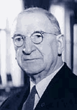

DeValera’s role as President
In 1966 deValera became President of Ireland. He kept this position for two terms. In 1973 he retired from political life altogether. On the 29th of August 1975 Eamon deValera died.
He dominated Irish affairs in the 20th century, and remains without doubt one of Ireland’s greatest but yet criticised politicians.